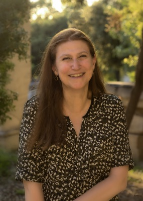

About
The FinNLP workshop, as the annual event of ACL SIG-FinTech, focuses on applying NLP, Machine Learning, and Large Language Models to finance, economics, and law, aiming to drive interdisciplinary innovation and address unique challenges in these fields. Since 2019, FinNLP has served as a bridge between AI and NLP communities by collocating with major conferences. Its proceedings are available on the ACL Anthology.
The 12th edition will be held at ACL 2027 in Kyoto, Japan. We also host shared tasks in the collocated event, FinEval. Please refer to the Call for Challenges for more details. In 2027, FinNLP joins forces with several teams that have been organizing events in the FinAI and FinNLP communities, to curate a richer workshop and deeper exchange between financial AI and NLP.
Topics of Interest
Financial, economic, and legal domains provide a distinctive testbed for the next generation of NLP and AI. Real-world financial information spans long documents, numerical tables, charts, news, regulatory filings, earnings calls, and rapidly evolving market signals; financial markets are multilingual, dynamic, and interconnected; and LLM agents, multi-agent systems, and world models are moving financial AI from static prediction toward interactive reasoning, simulation, and long-horizon decision making. We invite original research on these challenges across NLP, finance, economics, and law. Topics include, but are not limited to:
- Financial, economic, and legal language models and foundation models
- Numerical, tabular, long-context, and multimodal understanding and reasoning
- Multilingual, cross-lingual, low-resource, and domain-adaptive financial NLP
- LLM agents and multi-agent systems for financial and economic applications
- World models, market simulation, planning, memory, and sequential decision making
- Tool use, retrieval-augmented generation, and multi-source knowledge integration
- Knowledge graphs and structured representation learning for financial data
- Financial search, question answering, information extraction, and document intelligence
- Financial forecasting, event discovery, trading, portfolio management, and risk analysis
- Economic and market modeling, behavioral simulation, and decision support
- ESG analysis, sustainability assessment, and impact evaluation
- Financial regulation, compliance monitoring, legal reasoning, auditing, and regulatory reporting
- Synthetic data, data augmentation, privacy-preserving learning, and data quality
- Benchmarks and evaluation of financial models and agents
- Interpretability, fairness, privacy, security, safety, responsible AI, and governance
- Real-world systems, applications, and demonstrations from financial institutions and industry
Important Dates
| Submission system opens | TBA |
| Direct paper submission deadline | TBA |
| Pre-reviewed ARR commitment deadline | TBA |
| Author notification | TBA |
| Camera-ready deadline | TBA |
| FinNLP-2027 @ ACL (workshop day) | August 18 or 19, 2027 (TBA) |
| Location | Kyoto, Japan |
// All deadlines will be 11:59 PM Anywhere on Earth (AoE, UTC-12)
Organizers


Previous Editions
- 11th EMNLP-2026
- 10th EMNLP-2025
- 9th COLING-2025
- 8th IJCAI-2024
- 7th LREC-COLING-2024
- 6th IJCNLP-AACL-2023
- 5th IJCAI-2023
- 4th EMNLP-2022
- 4th IJCAI-ECAI-2022
- 3rd IJCAI-2021
- 2nd IJCAI-2020
- 1st IJCAI-2019
All proceedings are available on the ACL Anthology. Citation statistics: Google Scholar.
Contact
ACL SIG-FinTech · aclsigfintech@gmail.com